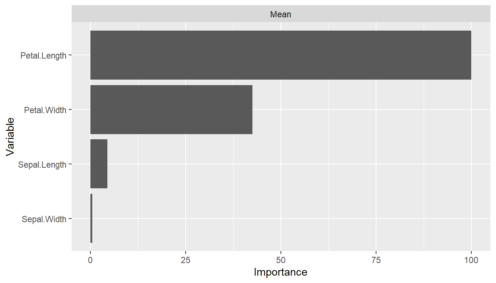
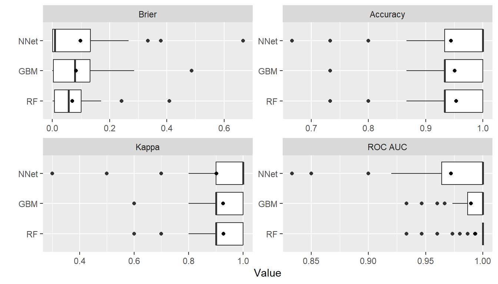

Example
Iris Flowers Species
The following illustrates use of the package to predict the species of flowers in Edgar Anderson’s iris data set.
| Characteristic | Value |
|---|---|
| Number of flowers | 150 |
| Species | |
| setosa | 50 (33.33%) |
| versicolor | 50 (33.33%) |
| virginica | 50 (33.33%) |
| Sepal.Length | |
| Median (Range) | 5.8 (4.3, 7.9) |
| Sepal.Width | |
| Median (Range) | 3 (2.0, 4.4) |
| Petal.Length | |
| Median (Range) | 4.35 (1.0, 6.9) |
| Petal.Width | |
| Median (Range) | 1.3 (0.1, 2.5) |
Training and Test Set Analysis
## Analysis libraries
library(MachineShop)
library(magrittr)
## Training and test sets
set.seed(123)
train_indices <- sample(nrow(iris), nrow(iris) * 2 / 3)
trainset <- iris[train_indices, ]
testset <- iris[-train_indices, ]
## Model formula
fo <- Species ~ .
## Models available for factor responses
modelinfo(factor(0)) %>% names
#> [1] "AdaBagModel" "AdaBoostModel" "BARTModel"
#> [4] "C50Model" "CForestModel" "EarthModel"
#> [7] "FDAModel" "GBMModel" "GLMModel"
#> [10] "GLMNetModel" "KNNModel" "LDAModel"
#> [13] "LMModel" "MDAModel" "NaiveBayesModel"
#> [16] "NNetModel" "PDAModel" "PLSModel"
#> [19] "QDAModel" "RandomForestModel" "RangerModel"
#> [22] "RFSRCModel" "RPartModel" "SelectedModel"
#> [25] "StackedModel" "SuperModel" "SVMModel"
#> [28] "SVMANOVAModel" "SVMBesselModel" "SVMLaplaceModel"
#> [31] "SVMLinearModel" "SVMPolyModel" "SVMRadialModel"
#> [34] "SVMSplineModel" "SVMTanhModel" "TreeModel"
#> [37] "TunedModel" "XGBModel" "XGBDARTModel"
#> [40] "XGBLinearModel" "XGBTreeModel"
## Model-specific information
modelinfo(GBMModel)
#> $GBMModel
#> $GBMModel$label
#> [1] "Generalized Boosted Regression"
#>
#> $GBMModel$packages
#> [1] "gbm"
#>
#> $GBMModel$response_types
#> [1] "factor" "numeric" "PoissonVariate" "Surv"
#>
#> $GBMModel$arguments
#> function (distribution = NULL, n.trees = 100, interaction.depth = 1,
#> n.minobsinnode = 10, shrinkage = 0.1, bag.fraction = 0.5)
#> NULL
#>
#> $GBMModel$grid
#> [1] TRUE
#>
#> $GBMModel$varimp
#> [1] TRUE
## Generalized boosted model fit to training set
iris_fit <- fit(fo, data = trainset, model = GBMModel)
## Variable importance
(vi <- varimp(iris_fit))
#> Object of class "VarImp"
#> Overall
#> Petal.Length 100.0000000
#> Petal.Width 35.1617651
#> Sepal.Width 0.9635229
#> Sepal.Length 0.0000000
plot(vi)
## Test set predicted probabilities
predict(iris_fit, newdata = testset, type = "prob") %>% head
#> setosa versicolor virginica
#> [1,] 0.9999315 6.838783e-05 9.001812e-08
#> [2,] 0.9999710 2.879339e-05 2.098339e-07
#> [3,] 0.9999657 3.415672e-05 1.762323e-07
#> [4,] 0.9999466 5.329402e-05 9.001947e-08
#> [5,] 0.9998985 1.014426e-04 9.001514e-08
#> [6,] 0.9998157 1.841414e-04 1.099548e-07
## Test set predicted classifications
predict(iris_fit, newdata = testset) %>% head
#> [1] setosa setosa setosa setosa setosa setosa
#> Levels: setosa versicolor virginica
## Test set performance
obs <- response(iris_fit, newdata = testset)
pred <- predict(iris_fit, newdata = testset, type = "prob")
performance(obs, pred)
#> Brier Accuracy Kappa
#> 0.07898484 0.96000000 0.93939394Resampling
## Resample estimation of model performance
(res <- resample(fo, data = iris, model = GBMModel, control = CVControl))
#> Object of class "Resamples"
#>
#> Models: GBMModel
#> Stratification variable: (strata)
#>
#> Object of class "MLControl"
#>
#> Name: CVControl
#> Label: K-Fold Cross-Validation
#> Folds: 10
#> Repeats: 1
#> Stratification parameters
#> Breaks: 4
#> Unique numeric threshold: 5
#> Minimum proportion: 0.1
#> Minimum size: 20
#> Monitoring: progress
#> Seed: 1268020900
summary(res)
#> Statistic
#> Metric Mean Median SD Min Max NA
#> Brier 0.0878290 0.1004237 0.08641698 3.026606e-06 0.2771162 0
#> Accuracy 0.9533333 0.9333333 0.04499657 8.666667e-01 1.0000000 0
#> Kappa 0.9300000 0.9000000 0.06749486 8.000000e-01 1.0000000 0
plot(res)
Performance Metrics
## Default performance metrics
performance(res) %>% summary
#> Statistic
#> Metric Mean Median SD Min Max NA
#> Brier 0.0878290 0.1004237 0.08641698 3.026606e-06 0.2771162 0
#> Accuracy 0.9533333 0.9333333 0.04499657 8.666667e-01 1.0000000 0
#> Kappa 0.9300000 0.9000000 0.06749486 8.000000e-01 1.0000000 0
## Metrics available for the resample output
metricinfo(res) %>% names
#> [1] "accuracy" "brier" "cross_entropy" "kappa2"
## User-specified metrics
performance(res, c(accuracy, kappa2)) %>% summary
#> Statistic
#> Metric Mean Median SD Min Max NA
#> accuracy 0.9533333 0.9333333 0.04499657 0.8666667 1 0
#> kappa2 0.9300000 0.9000000 0.06749486 0.8000000 1 0Model Tuning
## Tune over a grid of model parameters
iris_fit <- TunedModel(
GBMModel,
grid = expand_params(n.trees = c(25, 50, 100),
interaction.depth = 1:3,
n.minobsinnode = c(5, 10))
) %>% fit(fo, data = iris)
## Variable importance
varimp(iris_fit)
#> Object of class "VarImp"
#> Overall
#> Petal.Length 100.000000
#> Petal.Width 27.902334
#> Sepal.Width 1.749961
#> Sepal.Length 0.000000
## Plot performance over the grid points
tuned_model <- as.MLModel(iris_fit)
plot(tuned_model, type = "line")
#> $TrainStep1
Model Comparisons
## Model comparisons
control <- CVControl(folds = 10, repeats = 5)
res1 <- resample(fo, data = iris, model = GBMModel(n.tree = 50), control = control)
res2 <- resample(fo, data = iris, model = RandomForestModel(ntree = 50), control = control)
res3 <- resample(fo, data = iris, model = NNetModel(size = 5), control = control)
res <- c(GBM = res1, RF = res2, NNet = res3)
summary(res)
#> , , Metric = Brier
#>
#> Statistic
#> Model Mean Median SD Min Max NA
#> GBM 0.08107383 0.08460866 0.07298116 4.571697e-05 0.2907238 0
#> RF 0.06624640 0.06768000 0.06169925 0.000000e+00 0.2391467 0
#> NNet 0.07864975 0.02011782 0.09859517 1.193369e-14 0.3333006 0
#>
#> , , Metric = Accuracy
#>
#> Statistic
#> Model Mean Median SD Min Max NA
#> GBM 0.9480000 0.9333333 0.04721735 0.8000000 1 0
#> RF 0.9533333 0.9333333 0.04517540 0.8666667 1 0
#> NNet 0.9560000 1.0000000 0.06404364 0.7333333 1 0
#>
#> , , Metric = Kappa
#>
#> Statistic
#> Model Mean Median SD Min Max NA
#> GBM 0.922 0.9 0.07082603 0.7 1 0
#> RF 0.930 0.9 0.06776309 0.8 1 0
#> NNet 0.934 1.0 0.09606545 0.6 1 0
plot(res)
## Pairwise model differences and t-tests
perfdiff <- diff(res)
summary(perfdiff)
#> , , Metric = Brier
#>
#> Statistic
#> Model Mean Median SD Min Max NA
#> GBM - RF 0.014827429 0.0088173071 0.02577539 -0.03067784 0.07922929 0
#> GBM - NNet 0.002424081 0.0002267462 0.08603638 -0.24722494 0.15861226 0
#> RF - NNet -0.012403348 0.0014400000 0.08585020 -0.28093196 0.15264465 0
#>
#> , , Metric = Accuracy
#>
#> Statistic
#> Model Mean Median SD Min Max NA
#> GBM - RF -0.005333333 0 0.03254859 -0.06666667 0.06666667 0
#> GBM - NNet -0.008000000 0 0.05814986 -0.13333333 0.20000000 0
#> RF - NNet -0.002666667 0 0.06453743 -0.13333333 0.26666667 0
#>
#> , , Metric = Kappa
#>
#> Statistic
#> Model Mean Median SD Min Max NA
#> GBM - RF -0.008 0 0.04882288 -0.1 0.1 0
#> GBM - NNet -0.012 0 0.08722479 -0.2 0.3 0
#> RF - NNet -0.004 0 0.09680614 -0.2 0.4 0
t.test(perfdiff)
#> Object of class "PerformanceDiffTest"
#>
#> Upper diagonal: mean differences (Model1 - Model2)
#> Lower diagonal: p-values
#> P-value adjustment method: holm
#>
#> , , Metric = Brier
#>
#> Model2
#> Model1 GBM RF NNet
#> GBM NA 0.01482743 0.002424081
#> RF 0.0005160593 NA -0.012403348
#> NNet 0.8429089516 0.62397169 NA
#>
#> , , Metric = Accuracy
#>
#> Model2
#> Model1 GBM RF NNet
#> GBM NA -0.005333333 -0.008000000
#> RF 0.7566461 NA -0.002666667
#> NNet 0.7566461 0.771386862 NA
#>
#> , , Metric = Kappa
#>
#> Model2
#> Model1 GBM RF NNet
#> GBM NA -0.0080000 -0.012
#> RF 0.7566461 NA -0.004
#> NNet 0.7566461 0.7713869 NA
plot(perfdiff)
Ensemble Models
## Stacked regression
stackedmodel <- StackedModel(GBMModel, RandomForestModel, NNetModel)
res_stacked <- resample(fo, data = iris, model = stackedmodel)
summary(res_stacked)
#> Statistic
#> Metric Mean Median SD Min Max NA
#> Brier 0.07336369 0.07714558 0.06569142 0.002459935 0.212432 0
#> Accuracy 0.94666667 0.93333333 0.05258738 0.866666667 1.000000 0
#> Kappa 0.92000000 0.90000000 0.07888106 0.800000000 1.000000 0
## Super learner
supermodel <- SuperModel(GBMModel, RandomForestModel, NNetModel)
res_super <- resample(fo, data = iris, model = supermodel)
summary(res_super)
#> Statistic
#> Metric Mean Median SD Min Max NA
#> Brier 0.06965603 0.04244785 0.06930544 0.0001508527 0.1636911 0
#> Accuracy 0.96000000 0.96666667 0.04661373 0.8666666667 1.0000000 0
#> Kappa 0.94000000 0.95000000 0.06992059 0.8000000000 1.0000000 0Calibration Curves
cal <- calibration(res1)
plot(cal, se = TRUE)
Confusion Matrices
(conf <- confusion(res1, cutoff = NULL))
#> Object of class "ConfusionList"
#>
#> GBMModel :
#> Object of class "ConfusionMatrix"
#> Observed
#> Predicted setosa versicolor virginica
#> setosa 249.29359809 0.26651227 0.09116581
#> versicolor 0.69038646 229.66218393 23.49947888
#> virginica 0.01601545 20.07130380 226.40935531
summary(conf)
#> GBMModel :
#> Number of responses: 750
#> Accuracy (SE): 0.9404868 (0.008638776)
#> Majority class: 0.3333333
#> Kappa: 0.9107303
#>
#> setosa versicolor virginica
#> Observed 0.3333333 0.3333333 0.3333333
#> Predicted 0.3328684 0.3384694 0.3286622
#> Agreement 0.3323915 0.3062162 0.3018791
#> Sensitivity 0.9971744 0.9186487 0.9056374
#> Specificity 0.9992846 0.9516203 0.9598254
#> PPV 0.9985673 0.9047088 0.9185088
#> NPV 0.9985882 0.9590086 0.9531470plot(conf)
Partial Dependence Plots
pd <- dependence(iris_fit, select = c(Petal.Length, Petal.Width))
plot(pd)

Preprocessing Recipe
library(recipes)
rec <- recipe(fo, data = iris) %>%
role_case(stratum = Species)
iris_fit <- fit(rec, model = GBMModel)
varimp(iris_fit)
#> Object of class "VarImp"
#> Overall
#> Petal.Length 100.0000000
#> Petal.Width 32.8249381
#> Sepal.Width 0.1356791
#> Sepal.Length 0.0000000
res <- resample(rec, model = GBMModel, control = CVControl)
summary(res)
#> Statistic
#> Metric Mean Median SD Min Max NA
#> Brier 0.09221624 0.1079319 0.08269385 3.833395e-06 0.2513254 0
#> Accuracy 0.94666667 0.9333333 0.04216370 8.666667e-01 1.0000000 0
#> Kappa 0.92000000 0.9000000 0.06324555 8.000000e-01 1.0000000 0